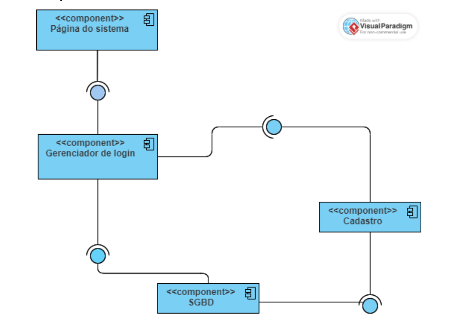

UML
Unified Modeling Language

Introdução a UML
A UML, que significa Unified Modeling Language (Linguagem de Modelagem Unificada)
Ela utiliza diagramas para expressar os aspectos de um sistema, assim sendo possível
entender os requisitos, estrutura e comportamento do sistema, resumindo modelar os sistemas,
o software, desenhar antes de começar a codar.
Requisitos
Os requisitos podem ser classificados como: Requisito Funcional ou Requisito Não-Funcional
Requisitos Funcionais (RF) descreve as funcionalidades do sistema, isto é, ele representa o
que o sistema deve fazer.
Requisito Funcional 01 (RF.01): O sistema deve listar todos os alunos
cadastrados em uma turma.
Requisito Funcional 02 (RF.02): O sistema deve calcular a média dos alunos
de uma turma.
Requisito Funcional 03 (RF.03): O sistema deve permitir o CRUD (Create,
Read, Delete, Update) de alunos.
Requisito Funcional 04 (RF.04): O sistema deve gerar um relatório com a
média dos alunos de uma turma.
"Requisitos claros garantem a base sólida para um projeto bem-sucedido."
Requisitos Não Funcionais (RNF) são requisitos que expressam restrições que o software deve
atender ou qualidades específicas que o sistema deve possuir. Eles não associados
diretamente com as funções presentes no sistema.
Requisito Não Funcional 01 (RNF.01): O sistema deve emitir o relatório da
média dos alunos em no máximo 5 segundos (desempenho).
Requisito Não Funcional 02 (RNF.02): O sistema deve ser executado no
sistema operacional Windows Vista e Linux nas distribuições Ubuntu e Famelix (restrições de
software).
Requisito Não Funcional 03 (RNF.03): A senha para acesso ao sistema deve
ter pelo menos 8 caracteres e incluir letras e números (segurança).
Diagramas
Diagrama de Classe
Uma classe é representada por um retângulo com três divisões, são elas: O nome da classe, seus atributos e por fim os métodos, cada classe do diagrama representa uma tabela do banco de dados. - Usado em um sistema orientado a objetos
Diagrama de Caso de Uso
O caso de uso é um meio para especificar as exigências requeridas por um sistema, ou seja,
ele representa um padrão de comportamento do sistema.
O Diagrama de Caso de Uso se concentra nos atores (usuários externos ou outros
sistemas) e nos casos de uso (funcionalidades ou interações) que esses atores realizam no
sistema.
É usado para representar as interações entre o sistema e seus usuários ou outros
sistemas.
Diagrama de Sequência
O Diagrama de Sequência se concentra na interação entre objetos no sistema e mostra a ordem
em que essas interações ocorrem ao longo do tempo.
Diagrama de Sequência detalha a interação entre objetos para implementar essas
funcionalidades em um cenário específico.
Diagrama de Atividade
O diagrama de atividade tem como objeto modelar um conjunto de atividades no sistema. Essas
atividades podem ser executadas através do controle de condições ou até mesmo em paralelo.
O diagrama de atividade é utilizado também para modelar graficamente (threads) em
programas concorrentes.
Diagrama de Estado
O Diagrama de Estado na UML é usado para representar os diferentes estados que um objeto pode
ter durante sua vida e como ele muda de um estado para outro em resposta a eventos.
Mostra os diferentes estados de um objeto durante sua execução e o estímulo que faz com que
o objeto mude de estado.
Diagrama de Componente
O propósito da elaboração de um diagrama de componente é mostrar em forma de desenho a
arquitetura de um sistema de software através de seus componentes, explicitando
principalmente as suas dependências.
O diagrama de componente ajuda-nos a entender como os diversos componentes do sistema
interagem entre si. Portanto, podemos definir que o diagrama de componente apresenta a
arquitetura física e as dependências entre vários componentes do software.

Página do sistema - Onde tudo irá ser acessado.
Gerenciador de login - Possibilita o acesso a página.
SGDB - Gerencia o banco de dados.
Gerenciador de login - É a interface fornecida que dá acesso ao componente
e a requerida é a que permite o acesso que seria a página do sistema.
Diagrama de Entidade e Relacionamento
O diagrama de entidade e relacionamento tem como objetivo demonstrar quais as necessidades para o banco de dados: as tabelas, os códigos e as referências à outra tabela.